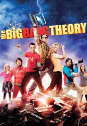

")
 
 IMDB-Wertung: 8.2 / 10
IMDB-Wertung: 8.2 / 10  Metascore:
Metascore: 
Leonard und Sheldon sind brillante Physiker, die meist zusammen mit ihren Kumpels Howard und Rajesh in ihrem gemeinsamen Apartment abhängen und - natürlich nach einem festgelegten Plan - ihre Videogames pflegen. Einzig und allein Penny, die neue Nachbarin, schafft es hin und wieder, für Abwechslung zu sorgen. Sie hat zwar keine Ahnung von Physik, doch kennt sie die Welt da draußen - etwas, was den Physikern vollkommen fremd zu sein scheint...
Jahr: 2007
Dauer: 22 Minuten
FSK: 6
Land: USA Studio: CBSTonspuren: DD2.0 - ,
Untertitel: Deutsch, Englisch,
Auflösung: 720p (1280x720) Größe: 1126 MB
Genre: Komödie, Liebe, TV-Serie
Regisseur: Mark Cendrowski, Anthony Rich, Peter Chakos, Nicole Lorre, James Burrows
Drehbuch: Chuck Lorre, Bill Prady, Steven Molaro, Steve Holland, Maria Ferrari
Soundtrack:
Darsteller:
 Kaley Cuoco als Penny, 279 episodes, 2007-2019
Kaley Cuoco als Penny, 279 episodes, 2007-2019 Johnny Galecki als Leonard Hofstadter, 272 episodes, 2006-2019
Johnny Galecki als Leonard Hofstadter, 272 episodes, 2006-2019 Jim Parsons als Sheldon Cooper, 272 episodes, 2006-2019
Jim Parsons als Sheldon Cooper, 272 episodes, 2006-2019 Simon Helberg als Howard Wolowitz, 271 episodes, 2007-2019
Simon Helberg als Howard Wolowitz, 271 episodes, 2007-2019 Kunal Nayyar als Raj Koothrappali, 271 episodes, 2007-2019
Kunal Nayyar als Raj Koothrappali, 271 episodes, 2007-2019 Melissa Rauch als Bernadette Rostenkowski, 201 episodes, 2009-2019
Melissa Rauch als Bernadette Rostenkowski, 201 episodes, 2009-2019 John Ross Bowie als Barry Kripke, 23 episodes, 2009-2018
John Ross Bowie als Barry Kripke, 23 episodes, 2009-2018 Wil Wheaton als Wil Wheaton, 17 episodes, 2009-2019
Wil Wheaton als Wil Wheaton, 17 episodes, 2009-2019 Brian George als Dr. V.M. Koothrappali, 16 episodes, 2007-2019
Brian George als Dr. V.M. Koothrappali, 16 episodes, 2007-2019 Laurie Metcalf als Mary Cooper, 14 episodes, 2007-2018
Laurie Metcalf als Mary Cooper, 14 episodes, 2007-2018 Brian Posehn als Bert Kibbler, 13 episodes, 2013-2019
Brian Posehn als Bert Kibbler, 13 episodes, 2013-2019 Joshua Malina als President Siebert, 8 episodes, 2011-2019
Joshua Malina als President Siebert, 8 episodes, 2011-2019 Pamela Adlon als Halley Wolowitz, 8 episodes, 2016-2018
Pamela Adlon als Halley Wolowitz, 8 episodes, 2016-2018 Stephen Hawking als Stephen Hawking, 7 episodes, 2012-2017
Stephen Hawking als Stephen Hawking, 7 episodes, 2012-2017 Lauren Lapkus als Denise, 7 episodes, 2018-2019
Lauren Lapkus als Denise, 7 episodes, 2018-2019 Bob Newhart als Arthur Jeffries, 6 episodes, 2013-2018
Bob Newhart als Arthur Jeffries, 6 episodes, 2013-2018 Dean Norris als Colonel Richard Williams, 6 episodes, 2016-2017
Dean Norris als Colonel Richard Williams, 6 episodes, 2016-2017 Mark Harelik als Dr. Eric Gablehauser, 5 episodes, 2007-2008
Mark Harelik als Dr. Eric Gablehauser, 5 episodes, 2007-2008 Regina King als Janine Davis, 5 episodes, 2013-2017
Regina King als Janine Davis, 5 episodes, 2013-2017 Pasha D. Lychnikoff als Dimitri, 5 episodes, 2012
Pasha D. Lychnikoff als Dimitri, 5 episodes, 2012 Robert Clotworthy als Announcer, 5 episodes, 2008-2015
Robert Clotworthy als Announcer, 5 episodes, 2008-2015 Keith Carradine als Wyatt, 5 episodes, 2010-2019
Keith Carradine als Wyatt, 5 episodes, 2010-2019 Sara Rue als Dr. Stephanie Barnett, 3 episodes, 2008
Sara Rue als Dr. Stephanie Barnett, 3 episodes, 2008 Riki Lindhome als Ramona Nowitzki, 3 episodes, 2008-2017
Riki Lindhome als Ramona Nowitzki, 3 episodes, 2008-2017 Kathy Bates als Mrs. Fowler, 3 episodes, 2018
Kathy Bates als Mrs. Fowler, 3 episodes, 2018Datei: X:\HD-Serien\Big Bang Theory\S01\The Big Bang Theory S01E01 Penny und der Physiker.mkv seit 04.02.2019
Festplatte: HD Serien(A-H)
 Es gibt insgesamt 182 Filme in der Gruppe 'HD-Serien'
Es gibt insgesamt 182 Filme in der Gruppe 'HD-Serien'